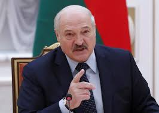
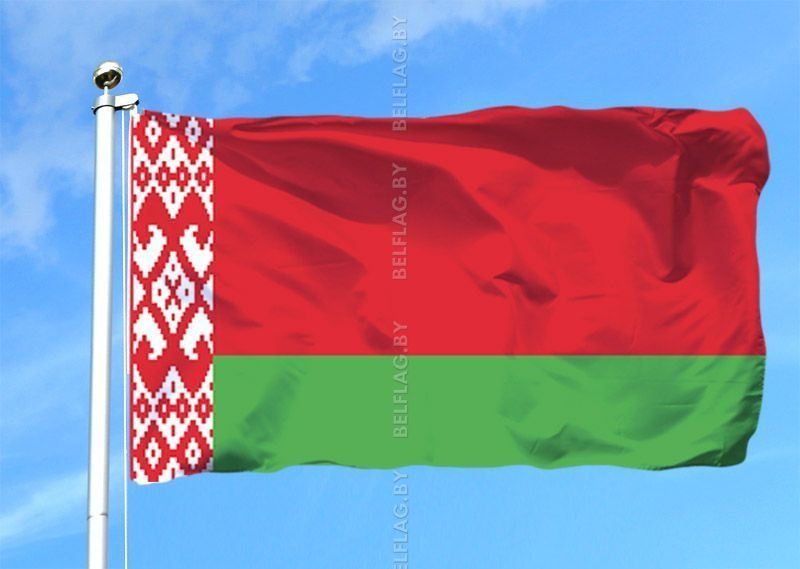
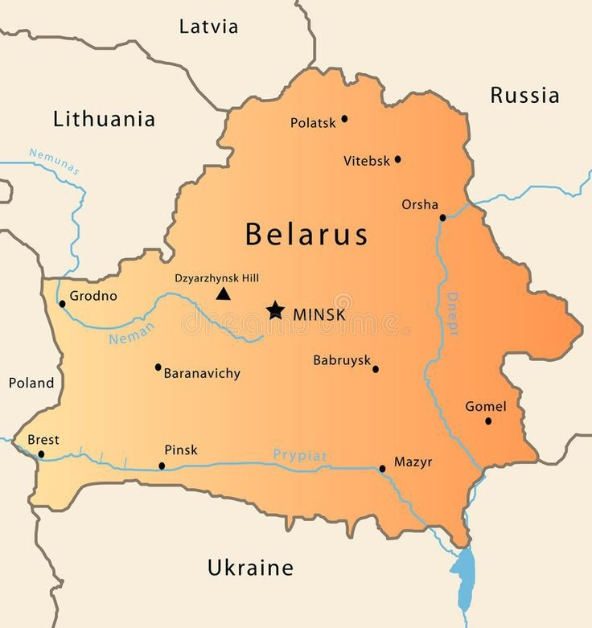
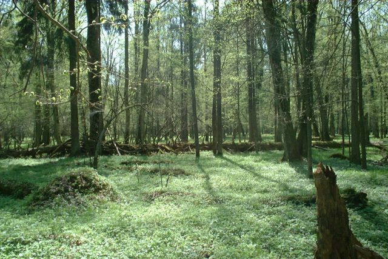
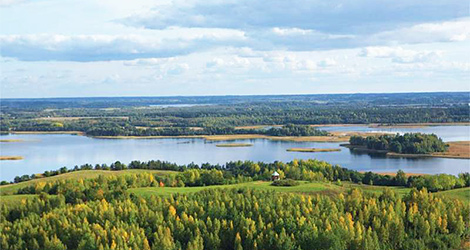

General information
The official name of the country is the Republic of Belarus. Belarus is located in the center of Europe. It borders on Poland, Lithuania, Ukraine and Russia. Belarus is a presidential republic, where the President is Alexander Grigoryevich Lukashenko The area of Belarus is 207,600 hectares sq.km . The population of the country is about 10 million people. The capital of the republic is Minsk, which is also its largest city. Other major cities are Gomel, Brest, Vitebsk, Grodno and Mogilev. The Republic of Belarus has its own symbols: anthem, coat of arms, flag and costume. The national flag of Belarus consists of red, green and white colors, where green is a symbol of our green forests, and red is a symbol of life and hope. Belarus is famous for its white storks. People say they are a symbol of good luck. White is a symbol of peace. Blouses and shirts in the Belarusian national costume are white with beautiful red ornaments – crosses and stripes. Belarus is famous for its beautiful nature.
Alexander Grigoryevich Lukashenko
The national flag of Belarus
Geographical location
The Republic of Belarus is located in the center of Europe and it’s a part of Eastern Europe. It is crossed by major transit routes of the entire continent, including one of Eurasia's main transport corridors from southwest to northeast. The total area of Republic of Belarus is 207,600 km². It's about 2% of total area of Europe and Belarus is the world's 84th largest country. Belarus is a compact country with a slightly longer horizontal axis. The country stretches 560km from north to south, and 650km from west to east.Belarus is surrounded by 5 countries. Poland, Lithuania, Latvia, Ukraine, Russia. With this countries Belarus shares borders in the west (Poland), northwest (Lithuania), north (Latvia and Russian federation), northeast and east (Russian federation), and south (Ukraine).
The length of the land bonder of Belarus is 3,617 km, including: 1,283km – with the Russian Federation, 1,250km – with the European Union, 1,084km – with Ukraine, 398km – with the Republic of Poland, 679km – with the Republic of Lithuania, 173km – with the Republic of Latvia.
Belarusian landscape
Belarus is a country of rivers and lakes filled with fish, that is why it is called blue-eyed. There are many forests in our country, if you just go on a hike through the forest, you will remember it, and all because our forests have very clean air! While you are walking through the forest, you may stumble upon the owners of the forest - the animals. And you can also see very beautiful and impressive landscapes! You will not find any mountains in the country, there are only hills (the highest of them is Dzerzhinskaya), since the territory of Belarus lies on flat terrain. There are many scenic spots and attractions in the very center of the country. In the forests themselves in spring and summer there are many varieties of flowers of all colors Belarus is filled with animals and plants! You can also visit various recreation centers. In our country you can see very kind, good-natured people, they will be able to help you at any moment. Natural attractions Protected areas in national parks of Belarus occupy about 10-50% of the territory; gentle economic activity is allowed in the remaining areas. Natural attractions can be divided into the following types: gardens; parks; zoos; bodies of water; nature reserves are all natural places, and there are also attractions: Belovezhskaya Pushcha, Narochansky National Park, Polesie, Castles and Palaces, Braslav Lakes and many others!
Belovezhskaya Pushcha
Braslav Lakes
Places to visit
Welcome to Belarus. It’s an attractive country in the centre of Europe. By all means you should come to Belarus and visit Brest Fortress. Brest Fortress is located in Brest, nowhere else can you find more interesting place as here. Here you can find the monument “Courage”, “Thirst”, the remains of a white palace, as well as the ruins of the Engineering Department and a baroque building built at the end of the 17th century. They are all amazing. A 6-kilometer-long Obvodny Canal was dug around the fortress, and the entrance to the complex is shaped like a star. It’s worth going here to see these amazing buildings with your own eyes.

monument “Thirst”

monument “Courage”

entrance
Games and Quizzes
1. What is the second largest city in Belarus?
1. Gomel 2. Brest 3. Grodno 4. Vitebsk
2. What river flows in Gomel?
1. Sozh 2. West Dvina 3. Dnepr 4. Berezina
3. Who is the president of the Republic of Belarus?
1. A.G. Lukashenka 2. V.V. Putin 3. A. Duda 4. R.T. Erdoğan
4. In what year did Belarus gain Independence?
1. 1991 2. 1992 3. 1993 4. 1989
5. When is Independence Day celebrated in Belarus?
1. 3 July 2. 3 June 3. 1 December 4. 4 Juli
6. How many Presidents were there in Belarus?
1. 1 2. 3 3. 2 4. 6
7. In what year did Belarus join the UN?
1. 1945 2. 1991 3. 1989 4. 1939
8. How many seas does Belarus wash?
1. 0 2. 2 3. 1 4. 3
9. Where is Belarus situated?
1. In the center of Europe. 2. In The North of Europe 3. In the west of Europe. 4. In the east of Europe.
10. On which river does Vitebsk stand?
1. West Dvina. 2. Sozh 3. Dnepr 4. Berezina